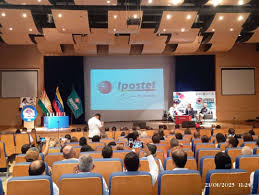
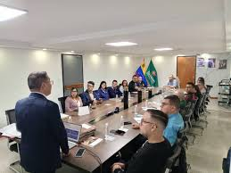

Taller "Exporta Fácil Postal" en Yaracuy
Ipostel, en colaboración con el Ministerio de Finanzas, dictó un taller dirigido a emprendedores y PYMES para facilitar la exportación a través del servicio postal. Este evento contó con la participación del director nacional de operaciones de Ipostel, Ramón Rodríguez, quien expuso los beneficios y pasos del programa.
Foro "Facilitación del Comercio" en Lara
Un representante de Ipostel participó en este foro, donde se discutieron temas relacionados con la exportación y se presentaron los detalles del servicio "Exporta Fácil Postal"

Exposición gráfica "Conozcamos nuestro territorio Esequibo"
Ipostel realizó esta exposición con el objetivo de socializar conocimientos sobre el territorio Esequibo, siguiendo las orientaciones del Gobierno Nacional.